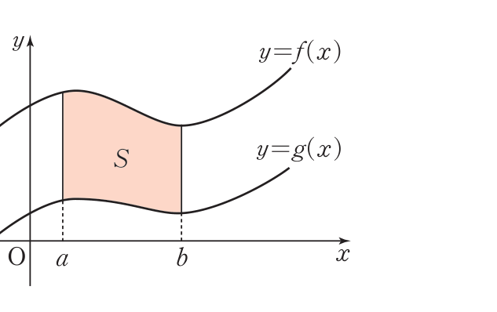
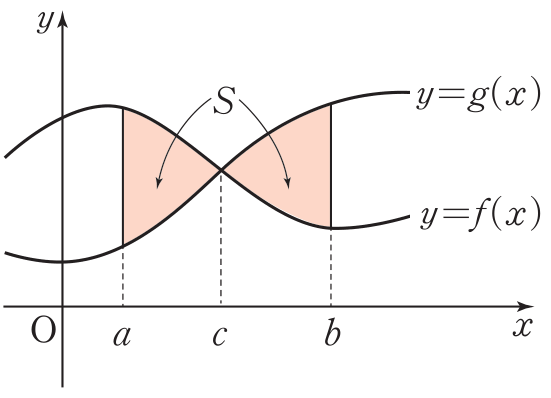
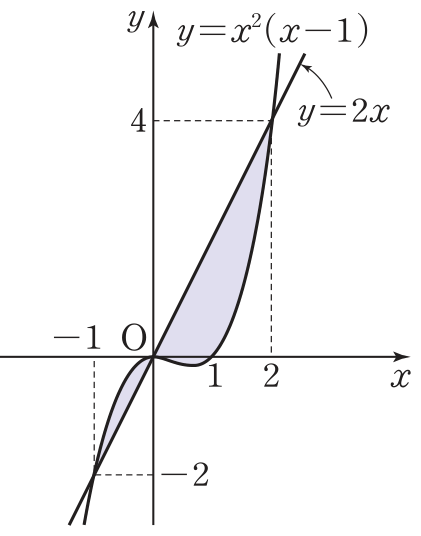

2026학년도 2학기 | 미적분 I
미적분 I 수업 학습지
00. 생각 열기 (Warm-up & Connection)
차시 26에서 곡선 \(y = f(x)\)와 \(x\)축이 둘러싸는 넓이를 \(S = \displaystyle\int_a^b |f(x)|\,dx\)로 통합했다. 그렇다면 \(x\)축이 아닌 다른 곡선 \(y = g(x)\)와 \(y = f(x)\)가 둘러싸는 도형의 넓이는?
[개방형 발문] \([a, b]\)에서 \(f(x) \geq g(x) \geq 0\)인 경우를 생각해 보자.

위 도형의 넓이 \(S\)는 "\(y = f(x)\) 아래 넓이"에서 "\(y = g(x)\) 아래 넓이"를 빼면 된다 — 즉 \(S = \) \( \displaystyle\int_a^b f(x)\,dx - \int_a^b g(x)\,dx \) \(= \displaystyle\int_a^b \{f(x) - g(x)\}\,dx\). (비상 미적분 I P.129 · 두 곡선 사이의 넓이 ❶ 참고)
그렇다면 \(g(x)\)가 음수 부분을 포함한다면? 두 곡선이 도중에 교차해서 위·아래가 바뀐다면? — 차시 26의 절댓값 발상을 그대로 이어 받자.
[연결] 차시 26의 한 줄 공식이 차시 27에서 \(g(x) = 0\)일 때의 특수 경우였음이 드러난다. 일반화하면 두 곡선 사이의 넓이는 \(S = \displaystyle\int_a^b |f(x) - g(x)|\,dx\) 한 줄로 통합된다. 오늘 우리는 ① 교점 구하기로 적분 구간 확정, ② 두 곡선의 상하 관계 판단, ③ 위·아래가 바뀔 때 구간 분할, ④ 곡선과 접선·곡선과 직선의 결합형까지 익힌다.
01. 개념 구성 (Conceptual Foundation)
1 두 곡선 사이의 넓이 — 통합 공식
두 함수 \(f(x), g(x)\)가 닫힌구간 \([a, b]\)에서 연속일 때, 두 곡선 \(y = f(x)\), \(y = g(x)\)와 두 직선 \(x = a\), \(x = b\)로 둘러싸인 도형의 넓이 \(S\):
\( \displaystyle S = \int_a^b |f(x) - g(x)|\,dx \)
유도 흐름 (3 case 통합):
- ❶ \([a, b]\)에서 \(f(x) \geq g(x) \geq 0\)일 때: \(S = \int_a^b f\,dx - \int_a^b g\,dx = \int_a^b (f - g)\,dx\). \(f - g \geq 0\)이므로 절댓값을 벗긴 것과 같음.
- ❷ \(f \geq g\)이지만 \(f\) 또는 \(g\)가 음수일 때: 두 곡선을 \(y\)축 방향으로 \(k\)만큼 평행이동하여 \(f + k \geq g + k \geq 0\)으로 만들 수 있음. 평행이동은 넓이를 바꾸지 않으므로 \(S = \int_a^b \{(f + k) - (g + k)\}\,dx = \int_a^b (f - g)\,dx\). \(k\)가 소거됨.
- ❸ 도중에 위·아래가 바뀔 때: 교점 \(c\)를 기준으로 \([a, c]\)에서 \(f \geq g\), \([c, b]\)에서 \(f \leq g\)이면 \(S = \int_a^c (f - g)\,dx + \int_c^b (g - f)\,dx = \int_a^b |f - g|\,dx\). 차시 26의 부호 분할과 동일한 발상.

핵심: 절댓값은 ① 양수에는 그대로, ② 음수에는 \(-\)를 붙여 부호를 통일. "어느 쪽이 위인가"를 매 구간 판단해 큰 함수에서 작은 함수를 빼면 자동으로 양수. (비상 미적분 I P.129~130 · 두 곡선 사이의 넓이 정리 참고)
2 예제 — 두 곡선 \(y = x^2 - 3x + 2\), \(y = -x^2 + x + 2\) 사이 넓이
풀이 흐름:
- ① 교점: \(x^2 - 3x + 2 = -x^2 + x + 2 \Rightarrow 2x^2 - 4x = 0 \Rightarrow 2x(x - 2) = 0 \Rightarrow x = 0, 2\). 적분 구간 \([0, 2]\).
- ② 상하 판단: \([0, 2]\)에서 \(x = 1\) 대입 — \(x^2 - 3x + 2 = 0\), \(-x^2 + x + 2 = 2\). 따라서 \(-x^2 + x + 2 \geq x^2 - 3x + 2\) (포물선 위쪽이 위).
- ③ 차: \((-x^2 + x + 2) - (x^2 - 3x + 2) = -2x^2 + 4x\).
- ④ 적분: \(S = \int_0^2 (-2x^2 + 4x)\,dx = \) \( \big[-\tfrac{2}{3}x^3 + 2x^2\big]_0^2 = -\tfrac{16}{3} + 8 = \tfrac{8}{3} \)
핵심 절차: 교점 \(\to\) 상하 \(\to\) 차의 적분. (비상 미적분 I P.130 · 예제 3 참고)
3 상하 역전이 있는 경우 — 예제 \(y = x^2(x - 1)\)과 \(y = 2x\)

풀이 흐름:
- ① 교점: \(x^2(x - 1) = 2x \Rightarrow x^3 - x^2 - 2x = 0 \Rightarrow x(x - 2)(x + 1) = 0 \Rightarrow x = -1, 0, 2\). 세 교점.
- ② 상하 판단 — \([-1, 0]\): \(x = -\tfrac{1}{2}\) 대입, 곡선 \(= \tfrac{1}{4} \cdot (-\tfrac{3}{2}) = -\tfrac{3}{8}\), 직선 \(= -1\) \(\Rightarrow\) 곡선이 위. \([0, 2]\): \(x = 1\) 대입, 곡선 \(= 0\), 직선 \(= 2\) \(\Rightarrow\) 직선이 위.
- ③ 분할 적분: \(S = \int_{-1}^{0}\{x^2(x-1) - 2x\}\,dx + \int_{0}^{2}\{2x - x^2(x-1)\}\,dx\)
\(= \int_{-1}^{0}(x^3 - x^2 - 2x)\,dx + \int_{0}^{2}(-x^3 + x^2 + 2x)\,dx\)
\(= \) \( \tfrac{5}{12} + \tfrac{8}{3} = \tfrac{37}{12} \)
핵심: 교점이 셋이면 구간이 둘로 나뉘고, 두 구간의 상하 관계가 반대. 각각 큰 함수 \(-\) 작은 함수의 정적분을 구해 합산. (비상 미적분 I P.131 · 예제 4 참고)
02. 수준별 훈련 (Level Training)
Level 1
교점 \(\to\) 상하 \(\to\) 차의 정적분 — 단일 구간 표준 흐름
💡 힌트 보기
💡 힌트 보기
💡 힌트 보기
Level 2
상하 역전 구간 분할·역함수 대칭·접선 결합형 응용
💡 힌트 보기
💡 힌트 보기
💡 힌트 보기
Level 3
"틀려야 는다!" 곡선과 절댓값 그래프 — V자 꺾인 점 분기

🚨 선생님의 함정 경고 (클릭하여 펼치기)
"절댓값 \(|x - 2|\)" 때문에 직선이 \(x = 2\)에서 꺾이므로 적분 구간을 절댓값 분기점에서 한 번 더 나눠야 한다는 점을 놓치기 쉽다.
STEP 1 — 절댓값 풀기: \(x \geq 2\)에서 \(|x - 2| = x - 2\), \(x \lt 2\)에서 \(|x - 2| = -(x - 2) = -x + 2\).
STEP 2 — 교점:
① \(x \geq 2\)에서 \(x^2 - 4x + 2 = x - 2 \Rightarrow x^2 - 5x + 4 = 0 \Rightarrow (x - 1)(x - 4) = 0 \Rightarrow x = 4\) (\(x = 1\)은 \(x \geq 2\) 위배).
② \(x \lt 2\)에서 \(x^2 - 4x + 2 = -x + 2 \Rightarrow x^2 - 3x = 0 \Rightarrow x(x - 3) = 0 \Rightarrow x = 0\) (\(x = 3\)은 \(x \lt 2\) 위배).
도형의 \(x\) 범위는 \([0, 4]\), 절댓값 꺾이는 점 \(x = 2\)에서 구간 분할.
STEP 3 — 상하 판단: \([0, 2]\)에서 \(x = 1\) 대입: 포물선 \(= 1 - 4 + 2 = -1\), V자 \(= -1 + 2 = 1\). V자가 위. \([2, 4]\)에서 \(x = 3\) 대입: 포물선 \(= 9 - 12 + 2 = -1\), V자 \(= 3 - 2 = 1\). V자가 위.
STEP 4 — 두 구간 정적분:
\(\int_0^2 \{(-x + 2) - (x^2 - 4x + 2)\}\,dx = \int_0^2 (-x^2 + 3x)\,dx = \big[-\tfrac{1}{3}x^3 + \tfrac{3}{2}x^2\big]_0^2 = -\tfrac{8}{3} + 6 = \tfrac{10}{3}\).
\(\int_2^4 \{(x - 2) - (x^2 - 4x + 2)\}\,dx = \int_2^4 (-x^2 + 5x - 4)\,dx = \big[-\tfrac{1}{3}x^3 + \tfrac{5}{2}x^2 - 4x\big]_2^4 = (-\tfrac{64}{3} + 40 - 16) - (-\tfrac{8}{3} + 10 - 8) = \tfrac{8}{3} - (-\tfrac{2}{3}) = \tfrac{10}{3}\).
STEP 5 — 합산: \(S = \tfrac{10}{3} + \tfrac{10}{3} = \tfrac{20}{3}\).
결론: 넓이 \(= \tfrac{20}{3}\).
핵심 통찰: 절댓값 함수와 포물선의 교점은 두 구간으로 분리해 각각 풀어야 한다. 절댓값 \(|x - a|\)는 \(x = a\)에서 미분 불가능한 꺾인 점이며, "두 곡선 사이 넓이"의 구간 분할은 ① 교점에서 + ② 절댓값 꺾인 점에서 동시에 일어난다. V자 도형의 대칭성 덕분에 \([0, 2]\)와 \([2, 4]\) 두 정적분이 같은 값 \(\tfrac{10}{3}\)으로 나옴 \(\to\) 대칭 검증의 좋은 사례.
03. 형성평가 (Final Check)
![문제 08 그림 — 두 곡선 y=f(x), y=g(x)가 x=0, 4, 7, 9에서 교차하여 세 영역 A([0,4]), B([4,7]), C([7,9])를 형성. A는 f 위, B는 g 위, C는 f 위](images/calc_29_q08.png)
💡 풀이 전략
⭐ 도전 문제 1
📖 출처: 수능특강 수학Ⅱ · 정적분의 활용 · 유제 2
난이도 ★★★★ (학습지 max+2, 7분) · 핵심: 두 곡선 교점의 실근 개수 조건 \(\Rightarrow\) 극값 분석으로 \(k\) 결정. 부호 분기 후 두 곡선 사이 넓이 정적분
📖 풀이 흐름 보기 (직접 풀어본 후 펼치기)
- STEP 1 — 차함수의 극값 분석: \(h(x) = f(x) - g(x) = x^3 - 2x^2 - 4x + 10 - k\). \(f(x) = g(x) \Leftrightarrow h(x) = 0 \Leftrightarrow x^3 - 2x^2 - 4x + 10 = k\). 곡선 \(y = x^3 - 2x^2 - 4x + 10\)과 직선 \(y = k\)의 교점 분석. \(h'(x) = 3x^2 - 4x - 4 = (3x + 2)(x - 2) = 0 \Rightarrow x = -\tfrac{2}{3}, 2\).
- STEP 2 — 실근 \(2\)개 조건: 극댓값 \(h(-\tfrac{2}{3}) = \tfrac{310}{27}\) (≈ 11.48), 극솟값 \(h(2) = 2\). 서로 다른 실근이 정확히 \(2\)개 \(\Leftrightarrow\) \(k\)가 극값 중 하나. \(k\)는 정수이므로 \(k = 2\) (극솟값). 따라서 \(g(x) = 3x^2 + 2x + 2\).
- STEP 3 — 교점 \(x = -2, 2\): \(f(x) - g(x) = x^3 - 2x^2 - 4x + 8 = (x + 2)(x - 2)^2 = 0 \Rightarrow x = -2, 2\) (\(x = 2\)는 중근). \([-2, 2]\)에서 \(f(x) - g(x) = (x + 2)(x - 2)^2 \geq 0\) ⇒ \(f \geq g\).
- STEP 4 — 넓이 정적분 (기·우함수 분리): \(S = \displaystyle\int_{-2}^{2}(x^3 - 2x^2 - 4x + 8)\,dx\). \(x^3, -4x\)는 기함수 ⇒ \([-2, 2]\) 적분 \(= 0\). 우함수만: \(S = 2\displaystyle\int_0^2(-2x^2 + 8)\,dx = 2\big[-\tfrac{2x^3}{3} + 8x\big]_0^2 = 2 \cdot \tfrac{32}{3} = \tfrac{64}{3}\). 정답: ② \(\dfrac{64}{3}\)
핵심: "실근의 개수 \(=2\)" 조건은 극값에서 접하는 경우를 의미. 차함수 \(h(x) = k\)의 그래프 분석으로 극댓값·극솟값 중 정수 값을 채택. 차시 27의 두 곡선 사이 넓이를 풀기 위해 III장 도함수의 활용(극값)이 결합되는 융합형 수능특강 문항. 기함수 적분의 대칭성(\(\int_{-a}^a x^{2n+1}\,dx = 0\))으로 계산을 가속.
⭐ 도전 문제 2
📖 출처: 2022학년도 수능 8번
난이도 ★★★ (학습지 max+2, 7분) · 핵심: 두 곡선이 둘러싸는 도형의 넓이를 수직선 \(x = k\)가 이등분하는 조건. 좌측 영역 정적분 \(= \tfrac{1}{2} \cdot\) 전체 정적분으로 \(k\)에 대한 삼차방정식 도출
📖 풀이 흐름 보기 (직접 풀어본 후 펼치기)
- STEP 1 — 교점 찾기: \(x^2 - 5x = x \Rightarrow x^2 - 6x = 0 \Rightarrow x(x - 6) = 0 \Rightarrow x = 0,\ 6\). 두 곡선이 만나는 점은 \((0, 0)\)과 \((6, 6)\). 적분 구간 \([0, 6]\).
- STEP 2 — 상하 판단: \(x \in [0, 6]\)의 내부 점 \(x = 3\)에서 직선 \(y = 3\), 곡선 \(y = 9 - 15 = -6\). 직선이 위. 즉 \([0, 6]\)에서 \(x \geq x^2 - 5x\), 차 \(g(x) = x - (x^2 - 5x) = 6x - x^2 = x(6 - x) \geq 0\).
- STEP 3 — 전체 넓이: \(S = \displaystyle\int_0^6 (6x - x^2)\,dx = \big[3x^2 - \tfrac{1}{3}x^3\big]_0^6 = 108 - 72 = 36\). 단축 공식 확인: \(\tfrac{1}{6}(6 - 0)^3 = \tfrac{216}{6} = 36\). \(\checkmark\)
- STEP 4 — 이등분 조건: \(0 \lt k \lt 6\)이고 \(\displaystyle\int_0^k (6x - x^2)\,dx = \tfrac{S}{2} = 18\). 좌변 계산: \(\big[3x^2 - \tfrac{1}{3}x^3\big]_0^k = 3k^2 - \tfrac{k^3}{3}\). 방정식 \(3k^2 - \tfrac{k^3}{3} = 18\).
- STEP 5 — 방정식 풀이: 양변 \(\times 3\): \(9k^2 - k^3 = 54 \Rightarrow k^3 - 9k^2 + 54 = 0\). \(k = 3\) 대입: \(27 - 81 + 54 = 0\) \(\checkmark\). 인수분해 \((k - 3)(k^2 - 6k - 18) = 0\). 이차식의 근 \(k = 3 \pm 3\sqrt{3}\). \(0 \lt k \lt 6\) 조건에서 \(3 + 3\sqrt{3} \approx 8.2 \gt 6\), \(3 - 3\sqrt{3} \approx -2.2 \lt 0\)이므로 모두 배제. 유효한 해는 \(k = 3\). 정답: ① \(3\)
핵심: "수직선 \(x = k\)가 두 곡선 사이 넓이를 이등분" 조건은 좌측 영역 = 전체의 절반이라는 정적분 방정식으로 환원. 차시 27의 4단계 절차(교점 → 상하 → 차의 정적분) 위에 이등분 조건을 더한 평가원 표준 응용. 두 곡선 사이 차 \(g(x) = 6x - x^2\)이 \([0, 6]\)에서 단일 부호이므로 절댓값 분기 없이 한 식으로 풀린다는 점이 중요.
04. 메타인지 성찰 (Exit Ticket)
스마트폰으로 우측 QR코드를 스캔하여, 아래 3가지 유형 중 하나 이상을 체크하고 통합 서술형으로 작성해 제출한다.